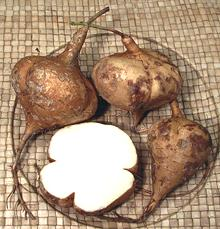

Jicama (say HEE-ka-mah) is one of only a few bean plants where a root tuber is the edible part. Immature bean pods are cooked in some countries but mature pods, beans, leaves and stalks are highly toxic. In the U.S. only the root tubers are available. The photo specimen (6-1/4 inches across, 2-1/2 pounds) is deeply lobed, but they are commonly without lobes.
Erosus came from Mexico, but is now widely grown in Southeast
Asia, the Philippines, China and India. The crisp, white, mildly sweet
flesh is most commonly just peeled and eaten raw, but in Asia it is
often cooked. It retains its crispness but quickly absorbs flavors from
sauces and other ingredients.
Ahipa - [Andean yam bean; Pachyrhizus
ahipa]
This plant has a similar root which is used similarly to Jicama,
but it's a shrub rather than a vine. It is little known outside the
Andes region and the West Indies where it was introduced.
More on Beans, Peas and Lentils.
 The Jicamas in the photo to the left are typical of those grown in the Philippines. They are only about 3 inches in diameter and 4-1/2 ounces, but are very sweet compared to our Mexican Jicamas. These were purchased from a Philippine market in Los Angeles (Eaglerock).
Jicama can be kept a couple of weeks unwrapped in a cool dry place, but once cut should be used within a week. It won't really keep much longer refrigerated.